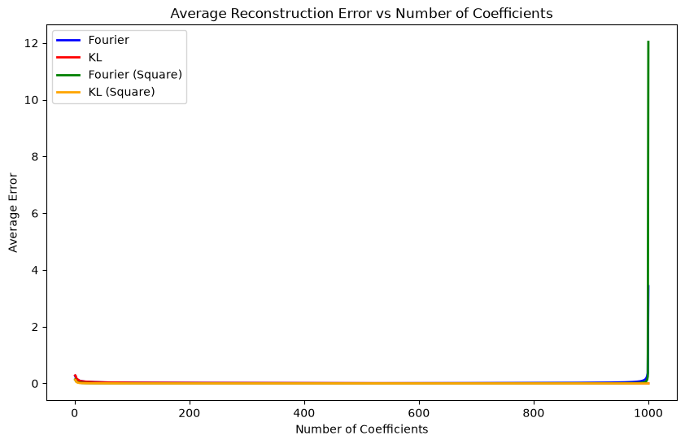
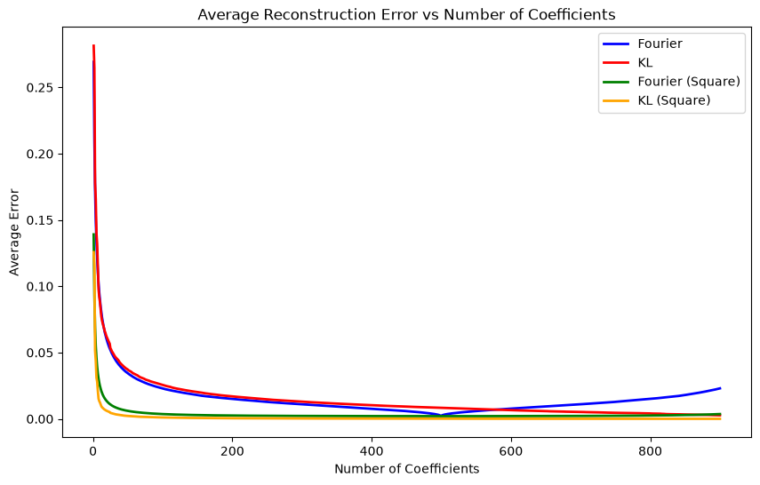
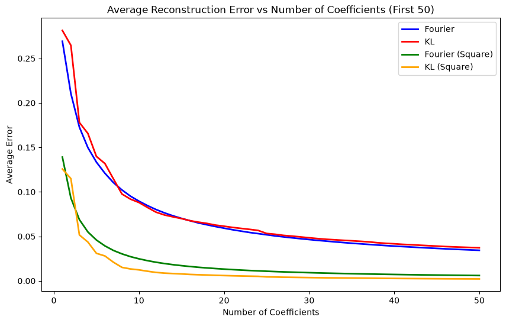

from wanderer import *
import numpy as np
import matplotlib.pyplot as pltThe Path Less Travelled
This notebook will contain all the driving code for my honours project including synthetic data generation, real data preprocessing, model training, and evaluation.
#load the OUP process from json
OUP_process = StochasticProcess.from_json('OUP_process_EM_orig.json')#Fourier decomp the OUP
coeffs_fourier = fourierDecomposition(1000, OUP_process)
#KL decomp the OUP
coeffs_KL, eigenfuncs_KL = KLDecomposition(process = OUP_process, num_components=1000, )
#create storage for integrated errors for abs and square for both Fourier and KL decompositions
avg_errors_abs_Fourier = np.zeros(1000)
avg_errors_square_Fourier = np.zeros(1000)
avg_errors_abs_KL = np.zeros(1000)
avg_errors_square_KL = np.zeros(1000)
center = (coeffs_fourier.shape[1] - 1) // 2
#loop through coefficeitn counts reconstruct process and calculate average errors
for i in range(1, 1001):
half = i # i IS |n|, no division
lo = max(center - half, 0)
hi = min(center + half + 1, coeffs_fourier.shape[1])
#reconstruct the process using the first i coefficients for Fourier
OUP_reconstructed_process_Fourier = reconstructFromFourier(coeffs_fourier[:,lo:hi], OUP_process.timeGrid,OUP_process.timeHorizon)
#reconstruct the process using the first i coefficients for KL
OUP_reconstructed_process_KL = reconstructFromKL(coeffs_KL[:,:i], eigenfuncs_KL[:,:i], OUP_process.timeGrid, OUP_process.timeHorizon)
#calculate the average absolute error for Fourier
avg_errors_abs_Fourier[i-1] = np.mean(np.abs(OUP_reconstructed_process_Fourier.paths - OUP_process.paths))
#calculate the average absolute error for KL
avg_errors_abs_KL[i-1] = np.mean(np.abs(OUP_reconstructed_process_KL.paths - OUP_process.paths))
#calculate the average square error for Fourier
avg_errors_square_Fourier[i-1] = np.mean((OUP_reconstructed_process_Fourier.paths - OUP_process.paths)**2)
#calculate the average square error for KL
avg_errors_square_KL[i-1] = np.mean((OUP_reconstructed_process_KL.paths - OUP_process.paths)**2)#print sizes
print("Size of avg_errors_abs_Fourier:", avg_errors_abs_Fourier.shape)
print("Size of avg_errors_abs_KL:", avg_errors_abs_KL.shape)
print("Size of avg_errors_square_KL:", avg_errors_square_KL.shape)
print("Size of avg_errors_square_Fourier:", avg_errors_square_Fourier.shape)
Size of avg_errors_abs_Fourier: (1000,)
Size of avg_errors_abs_KL: (1000,)
Size of avg_errors_square_KL: (1000,)
Size of avg_errors_square_Fourier: (1000,)#Plot the abs and square errors as the number of coefficients increases for Fourier and KL
plt.figure(figsize=(10, 6))
plt.plot(range(1, 1001), avg_errors_abs_Fourier, color='blue', linewidth=2, label='Fourier')
plt.plot(range(1, 1001), avg_errors_abs_KL, color='red', linewidth=2, label='KL')
plt.plot(range(1, 1001), avg_errors_square_Fourier, color='green', linewidth=2, label='Fourier (Square)')
plt.plot(range(1, 1001), avg_errors_square_KL, color='orange', linewidth=2, label='KL (Square)')
plt.title('Average Reconstruction Error vs Number of Coefficients')
plt.xlabel('Number of Coefficients')
plt.ylabel('Average Error')
plt.legend()
#Plot the abs and square errors as the number of coefficients increases for Fourier and KL excluding last 100
plt.figure(figsize=(10, 6))
plt.plot(range(1, 901), avg_errors_abs_Fourier[:-100], color='blue', linewidth=2, label='Fourier')
plt.plot(range(1, 901), avg_errors_abs_KL[:-100], color='red', linewidth=2, label='KL')
plt.plot(range(1, 901), avg_errors_square_Fourier[:-100], color='green', linewidth=2, label='Fourier (Square)')
plt.plot(range(1, 901), avg_errors_square_KL[:-100], color='orange', linewidth=2, label='KL (Square)')
plt.title('Average Reconstruction Error vs Number of Coefficients')
plt.xlabel('Number of Coefficients')
plt.ylabel('Average Error')
plt.legend()
#plot errors for only the first 50 coefficeints for Fourier and KL
plt.figure(figsize=(10, 6))
plt.plot(range(1, 51), avg_errors_abs_Fourier[:50], color='blue', linewidth=2, label='Fourier')
plt.plot(range(1, 51), avg_errors_abs_KL[:50], color='red', linewidth=2, label='KL')
plt.plot(range(1, 51), avg_errors_square_Fourier[:50], color='green', linewidth=2, label='Fourier (Square)')
plt.plot(range(1, 51), avg_errors_square_KL[:50], color='orange', linewidth=2, label='KL (Square)')
plt.title('Average Reconstruction Error vs Number of Coefficients (First 50)')
plt.xlabel('Number of Coefficients')
plt.ylabel('Average Error')
plt.legend()
#save vectors to csv
import pandas as pd
df = pd.DataFrame({
'Fourier_Abs': avg_errors_abs_Fourier,
'KL_Abs': avg_errors_abs_KL,
'Fourier_Square': avg_errors_square_Fourier,
'KL_Square': avg_errors_square_KL
})
df.to_csv('reconstruction_errors.csv', index=False)